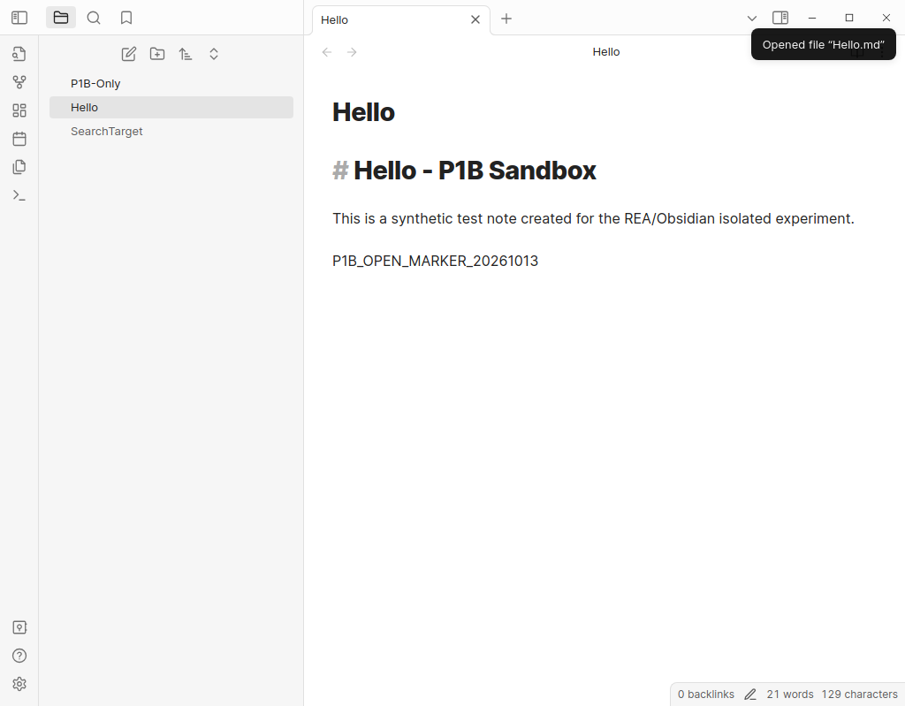
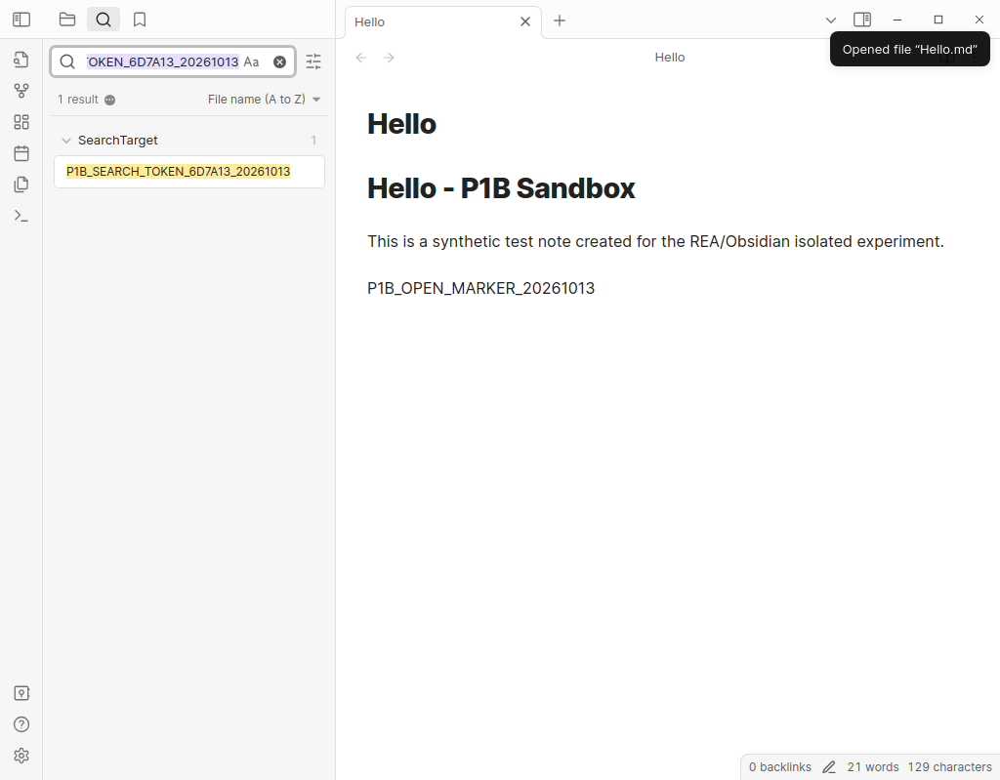

副标题：从一份桌面安装包里的 11 个 URI 注册点，到两次隔离环境中的实际 GUI 验证
软件考古 / Electron / Obsidian URI / Reverse Engineer Anything
研究对象：Obsidian shipped 1.5.3；隔离合成笔记库的观察截至 2026-10-17本文研究对象是保存在研究环境中的 Obsidian 桌面安装包（shipped 1.5.3）。结论只对应经 SHA-256 固定的文件及独立合成 Vault 的运行时实验，不应直接扩展为当前 Obsidian 所有版本或全部插件的行为。[E1]
开场：一个链接，为什么能让另一款程序打开一篇笔记？
想象你在浏览器、邮件或者另一款工具中看到这样的链接：
obsidian://open?vault=...&file=Hello.md
它看上去不过是一行文本，却能够唤醒桌面上的 Obsidian，找到某个笔记库，再把一篇 Markdown 文件显示在窗口中。链接与软件内部界面之间，看似隔着好几个世界：操作系统的协议注册、Electron 主进程、渲染进程，以及 Obsidian 自己维护的动作处理器。
问题在于：一条来自软件外部的 URI，究竟经过了怎样的路径，才变成应用内部的一次操作？
产品帮助文档告诉我们 URI 的写法，却不一定说明某一份具体安装包如何实现。我们因此没有从使用说明反推代码，而是从一份真正安装过的 Obsidian 发布包入手：固定文件身份、展开 ASAR、检索实际源代码，再让独立合成笔记库接受两个可观察的 URI 操作。[E1][E2][E4]
第一层：从操作系统走到 Electron 主进程
此次研究固定了两个发布资源：app.asar 和 obsidian.asar。前者与应用的启动/装载过程有关，后者包含我们继续追踪的应用实现。[E1][E2]
研究保留了可复核的输入指纹：
| 研究对象 | SHA-256 |
|---|---|
app.asar |
b5030c032a9b0b618d89685bdbf898c709215e2acc122baaceaf3510fb114491 |
obsidian.asar |
243f62b04770bb356fe6140921d73adbb0bbfa14d660b295b88386242785e349 |
提取出的 app.js |
d688deac0283ab7bab266f2e39f213da7935aeea0907858597c88d2bc4321a51 |
源码调查中，主进程有处理系统 URI 入口的相关路径，包括 open-url、启动参数与第二实例事件。被压缩的函数 he() 负责解析 URI 和选择笔记库，另一个经识别的函数 Me() 则通过 Electron 的 webContents 向渲染进程传递动作数据。[E2]
这里的 he、Me 是这份压缩文件里的名称，不是 Obsidian 承诺长期稳定的公开 API。换一个发行包，内部符号可能完全不同。
第二层：从渲染进程入口走进动作注册表
在这份代码的渲染侧，研究找到了 registerUriHook()、window.OBS_ACT 与 protocolHandlers 之间的静态关联。可以把它理解成一张内部“路由表”：系统送来了某个动作名称，应用在已注册的处理器中寻找对应实现，然后调用它。[E2]
按这份发布包的源码结构，主要路径可概括为：
obsidian:// → 系统协议入口 → Electron main → he() → Me() → window.OBS_ACT → protocolHandlers Map → 动作处理器
这是一条由源码位置拼出的静态机制链。它不能直接证明链上的每个中间函数都在某一次实验里被动态逐函数记录。
还有一个容易误判的细节：源代码中另有 CustomEvent('open-url') / handleOpenUrl 相关的通用链接处理支路。它与上面经 he→Me→OBS_ACT 的系统 URI 路径并不相同；如果为了叙述流畅把两条路线拼在一起，就可能得到一幅“看起来完整、实际未经证实”的错误流程图。[E2]
第三层：为什么检索到 16 处，最后只认定 11 个动作？
对 registerObsidianProtocolHandler 的文本检索共命中了 16 处。但这 16 处既可能是动作注册，也可能是同一 API 名称的其他使用场景；它们不能自动换算成 16 个独立功能。
我们进一步回到压缩源码，检查实际注册调用点及其回调体，保留了下列 11 个可定位的直接注册动作。[E3]
| URI 动作 | 在这份源码中观察到的主要用途 | app.js UTF-16 偏移 |
证据级别 |
|---|---|---|---|
open |
解析目标文件与子位置，并打开笔记 | 1975560 | 静态＋隔离 GUI |
search |
调用内置搜索插件 | 1975924 | 静态＋隔离 GUI |
new |
创建、追加或覆盖笔记 | 1976082 | 仅静态 |
show-plugin |
打开或定位社区插件界面 | 1977595 | 仅静态 |
show-theme |
打开主题相关界面 | 1977832 | 仅静态 |
show-release-notes |
展示更新说明 | 1977968 | 仅静态 |
debug-info |
打开调试信息界面 | 1978084 | 仅静态 |
publish-sites |
进入 Publish 站点视图 | 1978164 | 仅静态 |
sync-setup |
打开同步设置或远程 Vault 选择界面 | 1978465 | 仅静态 |
vault-setup |
准备欢迎文档与初始工作区 | 1978789 | 仅静态 |
hook-get-address |
为当前文件生成地址或回调 | 1979302 | 仅静态 |
这些偏移是 JavaScript UTF-16 代码单元位置，并非磁盘文件的 UTF-8 字节偏移。压缩代码含有非 ASCII 字符时，两者不能直接互换。表格记录的也只是该 shipped 1.5.3 代码范围，既不保证运行时插件不会继续注册动作，也不意味着其他版本一定采用同一批入口。[E1][E3]
一个更有意思的对照来自当前 Obsidian 官方 URI 使用帮助：文档还列出 daily、unique、choose-vault 等动作。它们没有出现于我们这组已经核对的 11 个直接注册点。正确结论不是“这些功能不存在”，而是：产品接口、实际加载的发布版本、内置插件注册和我们限定的源码搜索范围，并非相同的证据对象。[E3][E5]
第四层：从静态代码回到可观察的两次真实行为
逆向研究最容易发生的跳跃，是从“代码中能看到处理函数”直接得出“功能已经运行”。为避免这一跳跃，研究在名为 P1B-Only 的独立虚构笔记库里，使用本地 Obsidian 1.5.3 做了两项 GUI 实验。[E4]
实验一：open 真的打开了笔记吗？
源码中，open 处理器会解析 file 参数及标题/块的位置，尝试查找文件，再通过叶子视图打开它；目标不存在时还有提示路径。[E3]
运行实验中，Obsidian 窗口标题显示 Hello - P1B-Only - Obsidian v1.5.3，左侧文件列表选中了合成笔记 Hello，页面内也显示该笔记的虚构测试内容。原始截图和结构化结果保存在 P1B 记录中。[E4]

可以说的结论： 这次独立测试证实了目标 URI 对应的可观察笔记打开效果。不能说的结论： 我们已逐函数动态跟踪 he()、Me() 与每次内部方法调用。
实验二：search 把查询送进了搜索界面吗？
在静态实现中，search 并不是自己重新建立搜索引擎，而是取用内置 global-search 插件的实例，再调用 openGlobalSearch(query)。这说明 URI 是一个入口，真正执行搜索的逻辑仍位于应用内部已有的功能模块。[E3]
合成测试以专门准备的关键词触发搜索；截图显示搜索框写入该关键词，左侧出现 SearchTarget 的一条匹配结果。P1B 结果记录同时保存了 GUI 观察数据及运行前后两篇虚构笔记的 SHA-256 比对，结论是两篇测试笔记的字节没有发生变化。[E4]

这两张截图不是 AI 示意图，而是先前独立 Obsidian GUI 实验保存的真实画面。它们证明的范围十分具体：两个动作在该合成环境中产生了预期可见效果，不证明所有 URI 动作均能成功运行。[E4]
第五层：那些没有被执行的入口，同样值得记录
剩余九个动作只在这份发布包的静态源码中得到确认。其中最值得警惕的不是界面导航，而是带有副作用的入口：
new包含content、append、overwrite等分支，意味着它不只是“打开一个创建界面”，还可能直接操作文件内容。vault-setup关联初始欢迎文档的创建。sync-setup和publish-sites关联账号、同步或插件状态。hook-get-address有剪贴板与外部回调相关分支，回调发送成功不能只凭静态代码判断。[E3]
例如，源代码中的 new 路径附近有某些涉及 .. 的检查。看到一个路径检查既不能证明整条文件访问链绝对安全，也不能证明一定存在目录穿越漏洞。 要回答后一个问题，还需要明确的路径规范化规则和隔离环境中的输入—输出反例，而这些工作尚未执行。[E2]
没有做过的实验，应明确写成“没有做”，而不是在图上补一条虚线之后就宣布闭环。
软件考古的真正产物，不是一幅越复杂越好的流程图
从最初的一条 obsidian:// 链接，到最终形成 11 张功能卡，这项研究建立起一种可以迁移到其他软件的证据顺序：
冻结软件产物 → 标识入口 → 找到真实代码位置 → 区分直接事实和推断关系 → 对有限功能做独立运行时验证 → 保存无法证实的部分。
这一顺序可以应用于旧版本桌面软件的功能史、Electron 安装包研究、源码与发布产物差异，乃至“某个入口究竟在什么版本发生变化”的考证。
REA 的作用不是替研究者得出漂亮的故事结论，而是帮助它把可检查的模块、位置、关系和证据编号组织起来。Hermes 可以负责下一步查找与解释；但只有当输入对象、实际测试和证据链可核对时，AI 的解释才值得长期保存。
这也是我们留下 11 个源码注册点、2 个真实 GUI 行为、9 个尚未运行的入口 三组数字的原因。它们看起来不圆满，却比“所有功能已经复原”更接近软件本身。
研究证据与延伸阅读
- [E1] 安装包身份：本地
P1_STATIC_FINAL.md及identity.txt；固定app.asar、obsidian.asar和app.js的 SHA-256。 - [E2] 软件内部 URI 主链：
P1_STATIC_FINAL.md、a2/obsidian-main.js.extracted.txt与a3/a3-renderer-candidates.json；基于 shipped 源码的静态识别与必要限制。 - [E3] 11 个注册点的直接源码证据：
a4/a4-registration-evidence.json；包含原文窗口、精确 UTF-16 偏移。16 次关键字匹配不等于 16 个注册动作。 - [E4] 两项实际 GUI 记录：P1B 独立虚构 Vault，运行批次
2026-10-13T07-21-26-160Z，结果result.json及open.png、search.png；两篇虚构 Markdown 在运行前后 SHA-256 一致。 - [E5] 官方接口文档（现行参考，不充当旧版实现证据）：Obsidian Help · URI。
- [E6] 研究索引：P3-Z《Obsidian URI 软件功能考古地图 v1》保留了 11 张源码卡、2 张运行时截图及逐项证据等级。
编辑说明：本文于 2026-10-17 公开发布；源代码偏移、原物哈希和既有截图可审；公开引用原始软件包、截图归属、文章链接以及网站构建与移动端展示，须结合其证据等级与原件版本边界解释。没有启动新的 REA 深度分析，没有访问个人真实笔记库。